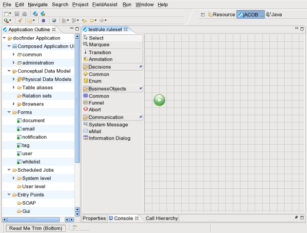
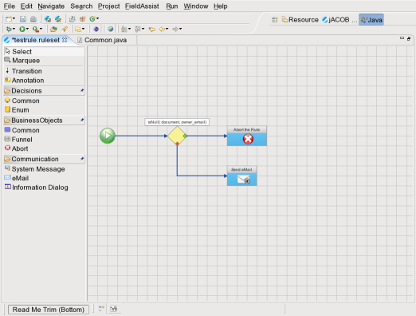
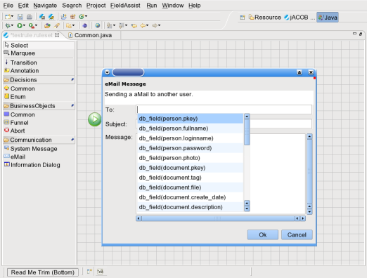
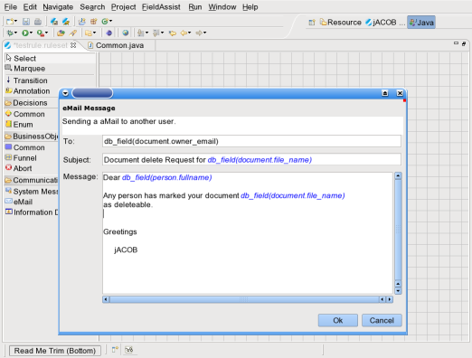
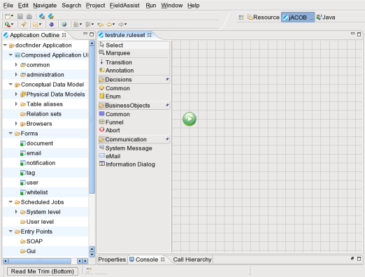
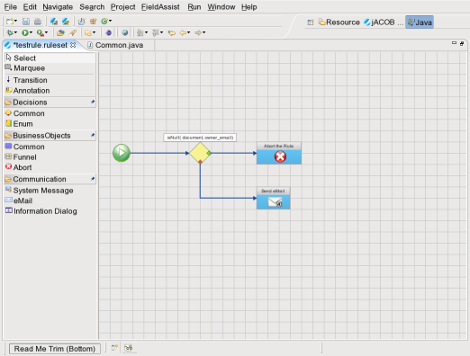
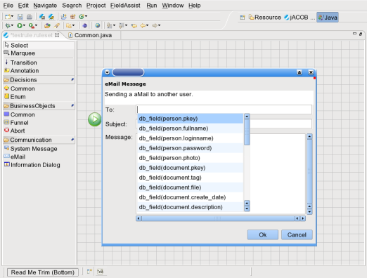
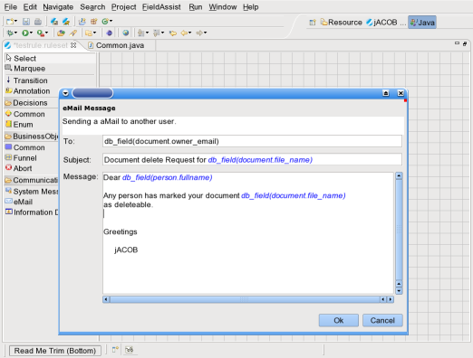

..so - only some screens are provided at the moment.




Buildin Features of Open-jACOBCore Engine Rule Engine Reporting Designer DB-Layer UI |
 Contact: info AT openjacob DOT org
|
|
For any IT application, the business rules change more frequently than the rest of the application code.
Rules Engines or Inference Engines are the pluggable software components that separate the business
rules from the application code. This allows the business users to modify the rules frequently without
the need of IT intervention and hence allowing the applications to be more adaptable with the dynamic rules.
..so - only some screens are provided at the moment.     |